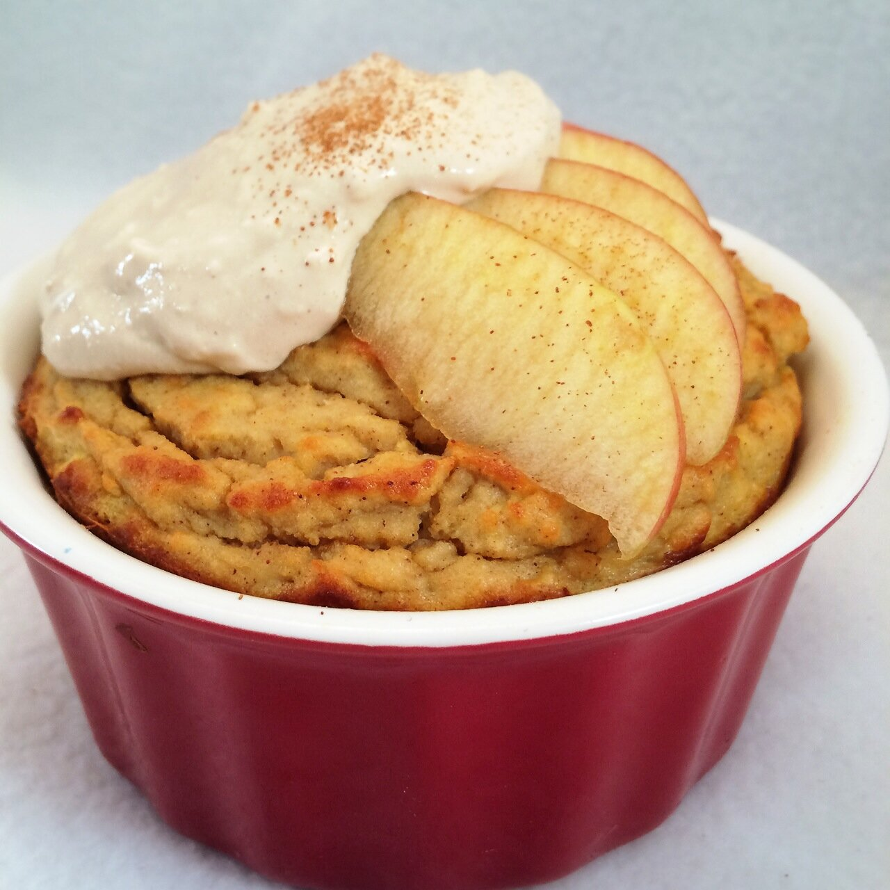
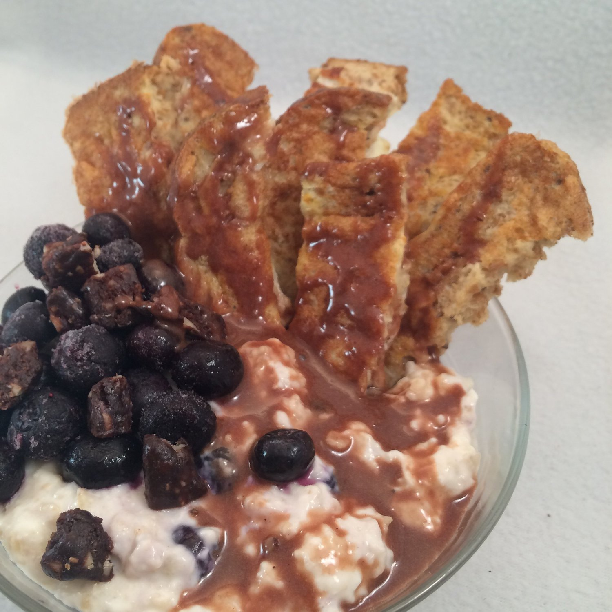
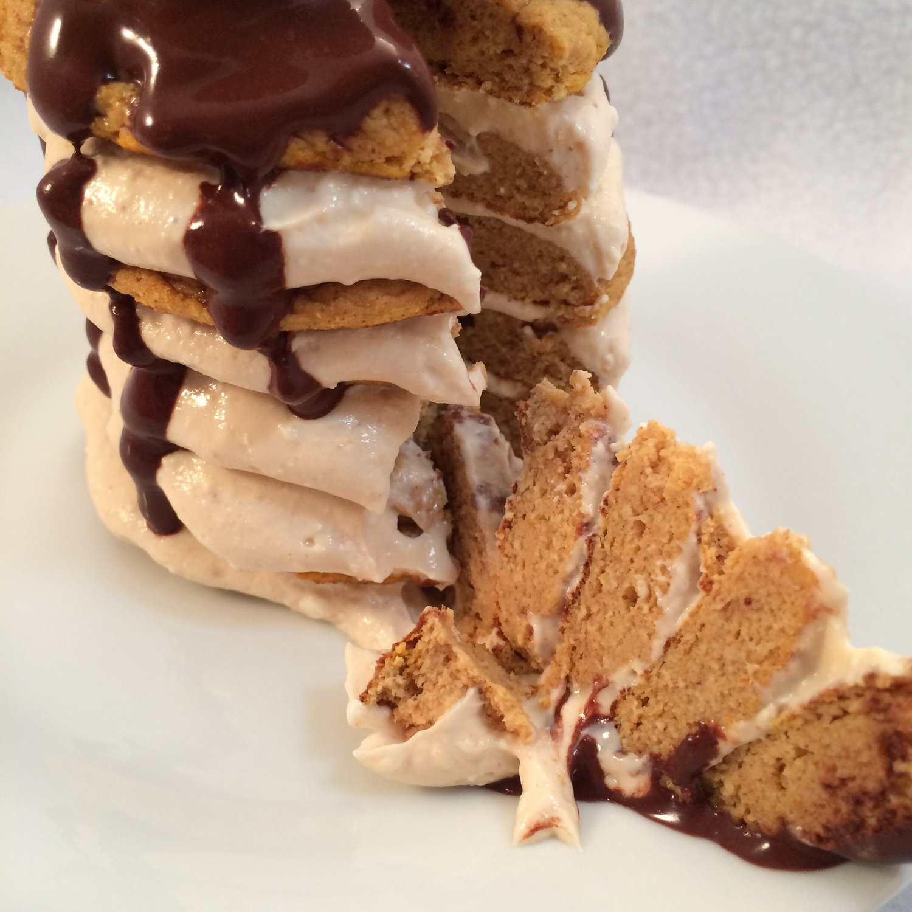
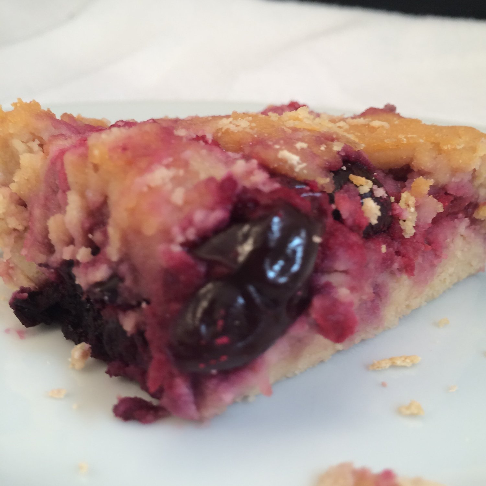
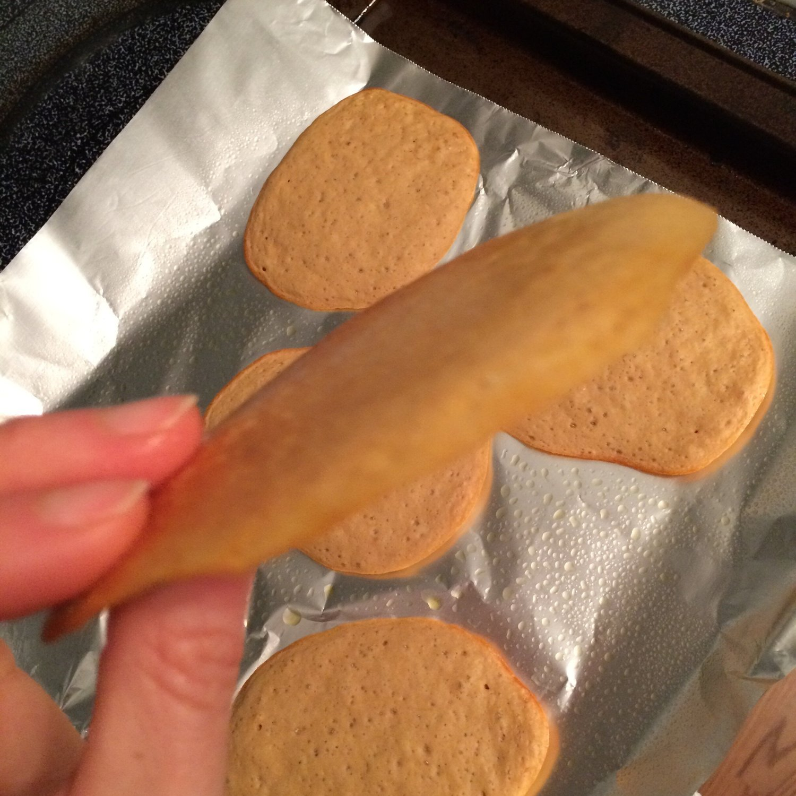
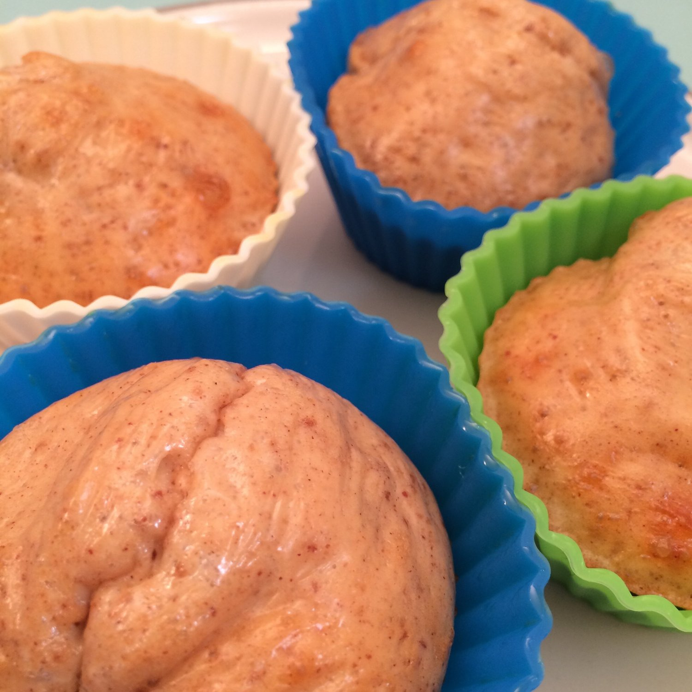
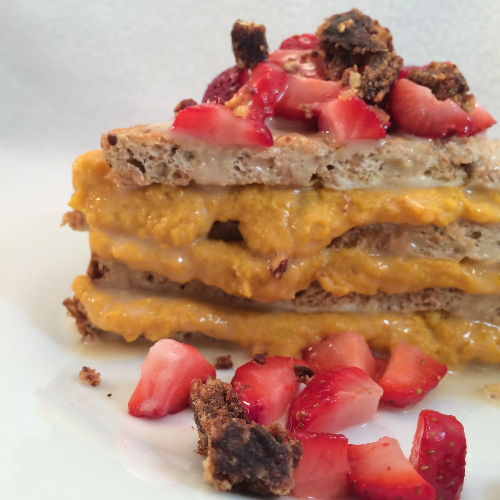

Food Failures
I want to display some extreme food failures I've had but never posted. So many people comment how "perfect" my posts are all the time. It's funny because no. I've had my fair share of failures and tragedies XD I wish I had pictures of them all. They're quite funny, actually. Well, they're depressing at the time, but they're hilarious to look back on. Nobody sees all the time that goes into failed experiments and recipes. I may start a series of all my failures if I can remember to photograph them. Usually I'm mourning too hard to remember to take a picture though. Here's what I do have for now.![IMG_6247[1]](../../images/1612803267921xko373a-img_62471.jpg) This was a coconut cream pie recipe I recreated.. In what world are pies shaped like this. No world. Taste was amazing. Looked... meh.
This was a coconut cream pie recipe I recreated.. In what world are pies shaped like this. No world. Taste was amazing. Looked... meh.

This was an attempt at an apple spice spaghetti squash... thing. Looked meh. Tasted meh also. Womp Womp.
Here's a picture I considered using several times but could never bring myself to. It's french toast dipping sticks with oatmeal, blueberries, and chocolate brownie coconut butter. Something about the coconut butter on top just disturbed me too much to show this to anyone. Even though it was delicious as heck :(
Sometimes my pancakes are awkward, goopy looking, and lackluster. That sucks.
Lol. Lololol. This is just sad. This is a less flattering image of my Cherry + Raspberry Pie Bars. Cockroaches is all I can think of. Just. Sad.
Mmmm... Flat as heck cookies ._. Not so good. I decided to add 1 extra TBSP of milk before I baked these... That was a bad idea Kim. 1 TBSP too many.
Mmmm... Dry as heck muffins ._. Mehhhhh. I added too much protein powder to these. I knew I was taking a risk when I baked these but I wanted to try anyways. They looked...ok maybe. Sorta dry but ok maybe. Then I bit into them and was overwhelmed with Styrofoam in my mouth. I later perfected these to make these Snickerdoodle Blondie Bites :) Muchhhh better.
Wtf is this. Grilled cheese? No. That is mashed pb kabocha layered between french toast. In no ways does this look appealing. All I see is cheese where there is no actual cheese.